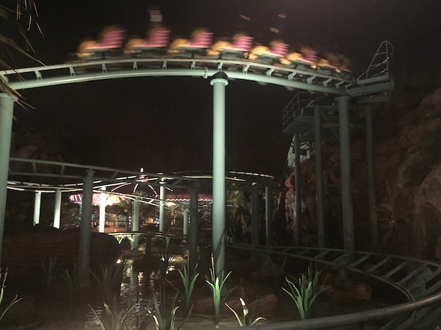
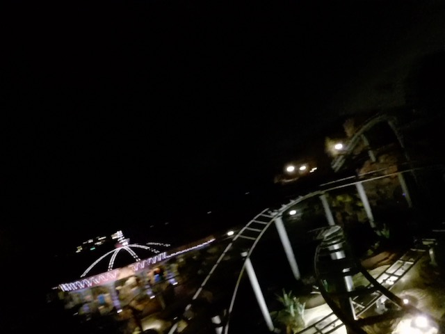
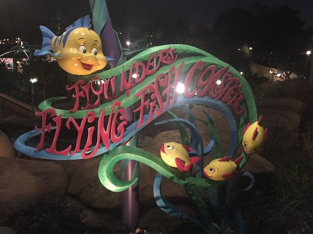

| |
Flounder's Flying Fish Review

We're here at Tokyo DisneySea where's we'll be revewing the kiddy coaster. Flounder's Flying Fish. After climbing into the seats and pulling down the lap bar, you quickly go around a turn and climb up the lifthill. However, after cresting the lifthill, you go around a turn and down another dip and around a small curved drop. This leads into another curve around a big turn. This doens't simulate swimming, but still fun. Go down another downward helix, gain a little speed. That's fun. Go through a little dip, around a turn, through another dip, and right into the brake run. Then you glide back to the station. This is actually a Togo Roller Skater. And....it's a fun roller skater, but I'd only ride it if you don't have the credit or love rollerskaters. Also, ride it at night. The line is actually short then.
4/10
Location: Tokyo DisneySea
Opened: 2001
Built by: Togo
Credit #600
Last Ridden: November 11, 2018
Flounder's Flying Fish Photos


Home
|